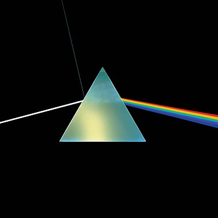

THE DARK SIDE OF THE MOON _ PINK FLOYD

- Track - Speak To Me//Breathe (In The Air)//On The Run//Time//The Great Gig In The Sky//Money//Us And Them//Any Colour You Like//Brain Damage//Eclipse
- Why? - 1970년대에 이런 음악이 나올 수 있다는게 정말 신기하다. 너무 유명한 앨범. 수록곡 모두 이어져 앨범 전곡을 들으면 마치 영화 한 편을 본 듯 하다.
- Live -